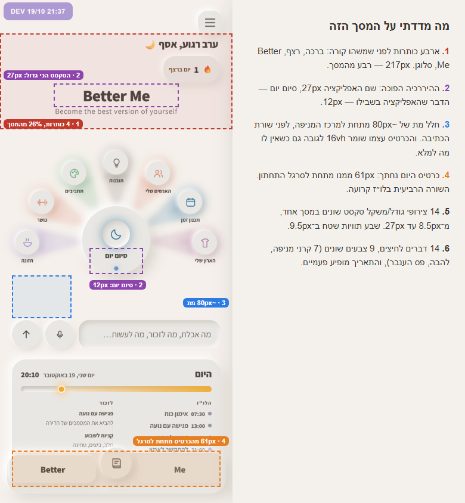
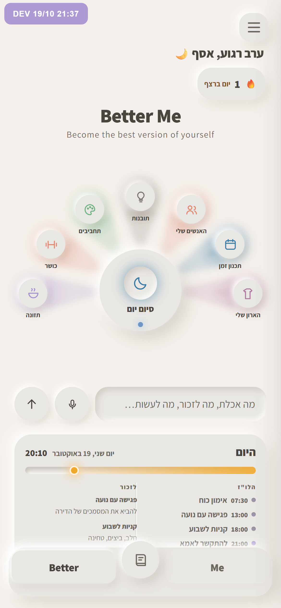
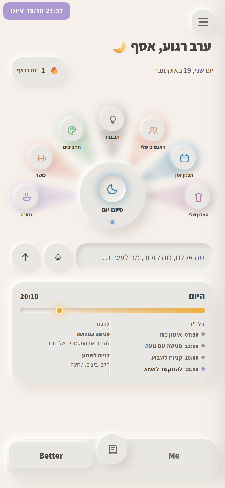
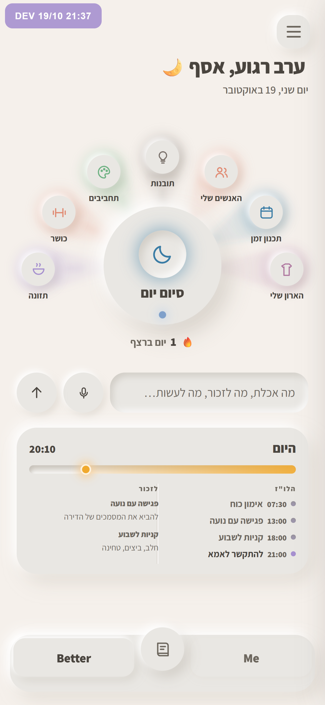
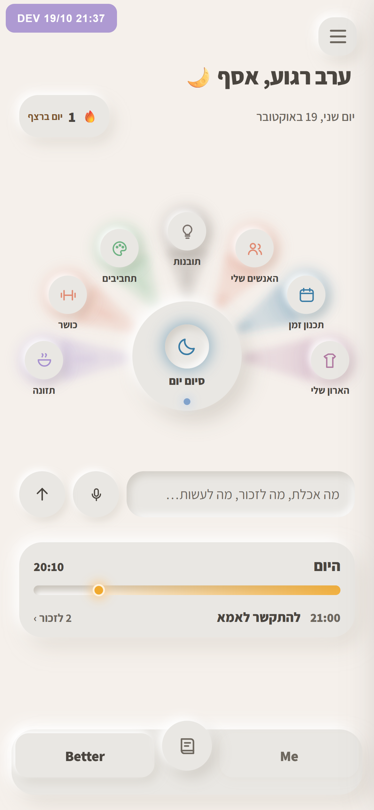

המסך הראשי: למה הוא לא זורם
צולם מ־dev בגודל של טלפון (390×844), בשמונה בערב, ביום עם ארבעה דברים בלו״ז. הכיוונים צולמו על האפליקציה האמיתית עם אותם נתונים. המניפה לא זזה, ואור הענבר נשאר רק בפס של היום. ב־dev לא שיניתי כלום.


מה שיש עכשיו
ארבע כותרות למעלה, חלל מת מתחת למניפה, וכרטיס היום שנחתך מתחת לסרגל התחתון.

למעלה שקט
Better Me והסלוגן יורדים, כי השם כבר כתוב בסרגל התחתון. הברכה גדלה ל־24px והופכת לכותרת היחידה, התאריך והרצף בשורה אחת מתחתיה, וכרטיס היום נכנס כולו.
הסיכון: "סיום יום" נשאר בגודל 12px, כך שהעין עדיין לא יודעת לאן להסתכל.

סיום יום במרכז
כמו א, ובנוסף המרכז של המניפה גדל ב־24% והופך לדבר הכי גדול במסך. הרצף, שסופר סיכומים שנסגרו, עובר אל מתחת למרכז וממלא את החלל המת. הקרניים נחלשות.
הסיכון: המניפה פחות צבעונית. אפשר להחזיר את הקרניים לעוצמה המלאה ולהשאיר רק את המרכז הגדול.

היום בשורה אחת
כמו א, ובנוסף כרטיס היום מראה רק מה הבא וכמה דברים יש לזכור (99px במקום 214px). הלו״ז המלא נשאר בלחיצה.
הסיכון: הלו״ז כבר לא נראה במבט אחד, ובטלפון גבוה נשאר אוויר מתחת לכרטיס.
כדי לבחור, כתוב לי בצ׳אט א, ב, ג, או שילוב ביניהם.